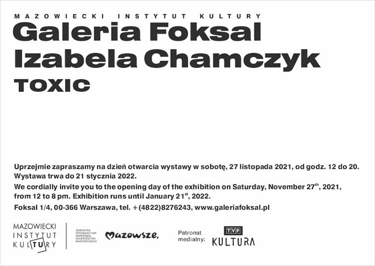
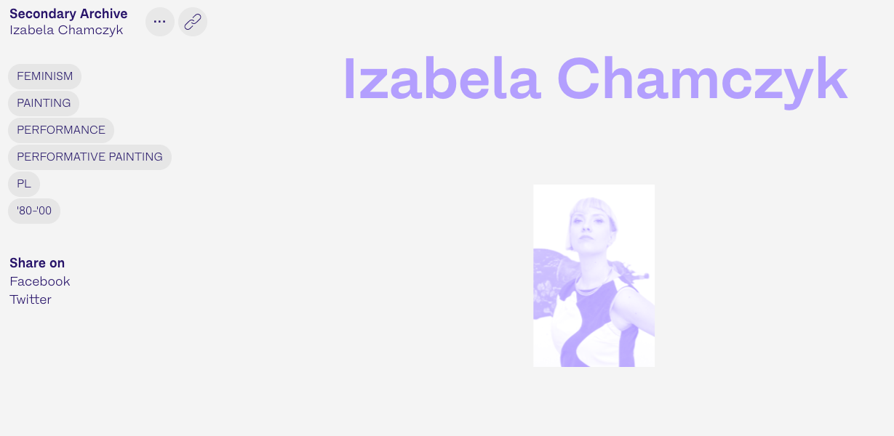
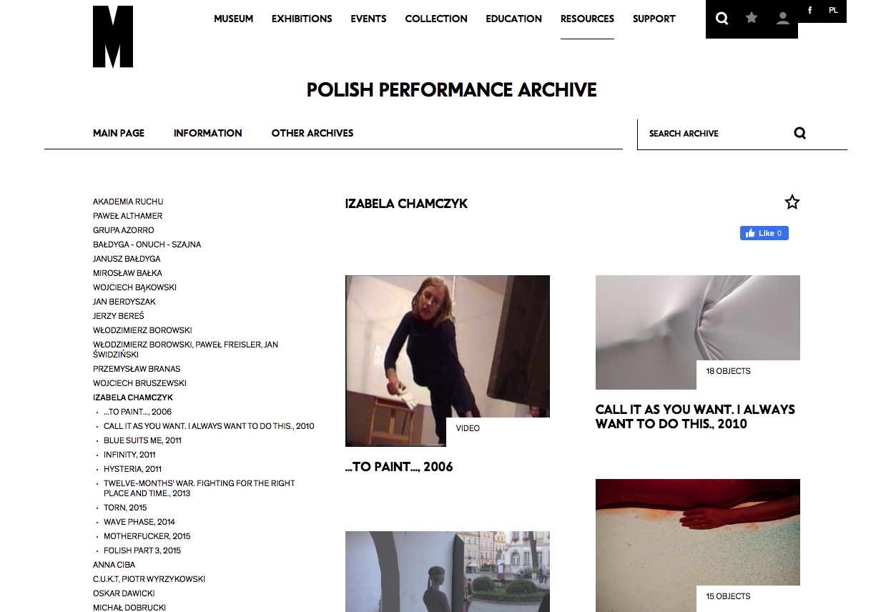
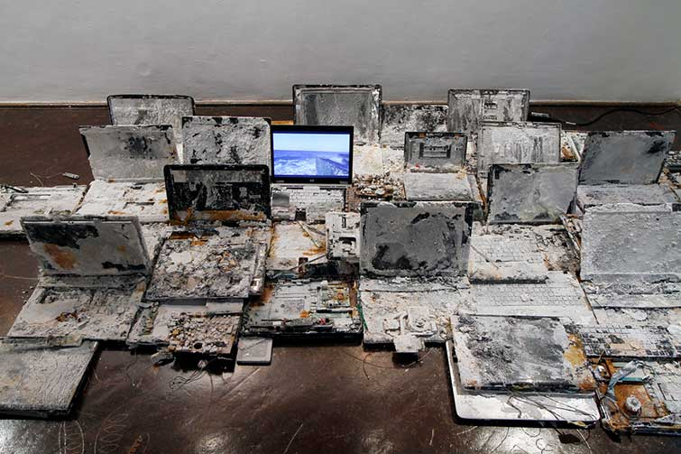

News
individual exhibition of performative painting entitled TOXIC

"I do art because I do not know how to do otherwise. Art is my passion and my life. Thanks to it I express myself, process important topics and create new realities. Being an artist is my profession, but it is also my identity. When asked who am I? — I answer — an artist."
More about my work can be found on the SECONDARY ARCHIVE website — created in cooperation with the Katarzyna Kozyra Foundation and Zachęta National Gallery of Art, to which I was included.

Ten of my documentation of performances can be found in POLISH PERFORMANCE ARCHIVE at the Museum of Modern Art in Warsaw

Individual exhibition "SERIOUSLY SALTY. New materialisations."

phot. Andrzej Rerak
GOLDEN MEAN — online performance by Izabela Chamczyk
The second online performance from the "EVERYDAY LIFE" cycle. Izabela Chamczyk's cycle of performances relates to the pandemic and current events. Each action is a response to the changing reality. Using her body as a medium, the artist reflects the social situation, condition and emotions.
live streaming on Facebook lokal_30
Partners: CCA Kronika in Bytom, lokal_30 in Warsaw, BWA Awangarda in Wrocław
Supported by the scholarship programme of the Minister of Culture and National Heritage "Kultura w sieci/Culture in the Net".
The beginning of the end — online performance
The first online performance of the "EVERYDAY LIFE" cycle. Cycle of performances relates to the pandemic and current events. Each action is a response to the changing reality. Using her body as a medium, the artist reflects the social situation, condition and emotions.
live streaming on Facebook Kronika
Partners: CCA Kronika in Bytom, lokal_30 in Warsaw, BWA Awangarda in Wrocław.
Supported by the scholarship programme of the Minister of Culture and National Heritage "Kultura w sieci/Culture in the Net".